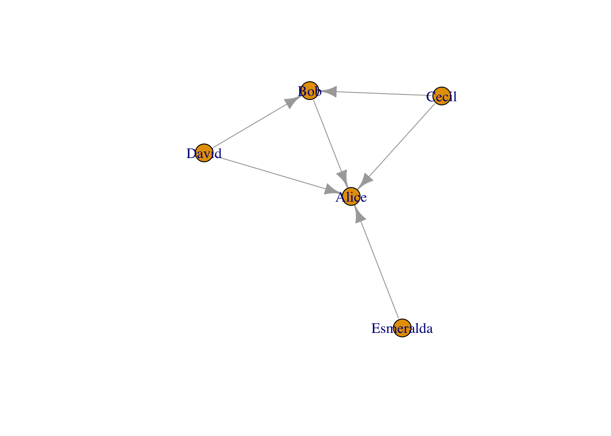

网络分析之igraph
igraph是一些列网络分析工具的集合.开源且免费,拥有R, Python以及C/C++等语言接口.我们主要介绍R语言中的igraph包.其官网如下:
https://igraph.org/r/doc/plot.common.html
0.0.1 安装
0.0.2 常用功能总结
0.0.3 从data frame转变为``igraph对象
使用graph_from_data_frame()函数.一共三个参数:
d:data.frame,前两列必须是一条边的两个顶点,比如第一列为from,第二列为to.其余的列会作为edge的属性.directed:是否为有向图,默认为TRUE.vertices:需要是一个data.frame.第一列是vertex的名字,然后其他列是vertex的属性.
library(igraph)##
## Attaching package: 'igraph'## The following objects are masked from 'package:stats':
##
## decompose, spectrum## The following object is masked from 'package:base':
##
## unionactors <- data.frame(name=c("Alice", "Bob", "Cecil", "David",
"Esmeralda"),
age=c(48,33,45,34,21),
gender=c("F","M","F","M","F"))
relations <- data.frame(from=c("Bob", "Cecil", "Cecil", "David",
"David", "Esmeralda"),
to=c("Alice", "Bob", "Alice", "Alice", "Bob", "Alice"),
same.dept=c(FALSE,FALSE,TRUE,FALSE,FALSE,TRUE),
friendship=c(4,5,5,2,1,1), advice=c(4,5,5,4,2,3))
g <- graph_from_data_frame(relations, directed = TRUE, vertices = actors)
g## IGRAPH 3a13e29 DN-- 5 6 --
## + attr: name (v/c), age (v/n), gender (v/c), same.dept (e/l),
## | friendship (e/n), advice (e/n)
## + edges from 3a13e29 (vertex names):
## [1] Bob ->Alice Cecil ->Bob Cecil ->Alice David ->Alice
## [5] David ->Bob Esmeralda->Aliceplot(g)
0.0.3.1 寻找某个vertex的neighbor
使用neighbors()函数.一共两个参数:
graph:igraph类对象.
V:某vertex的名字(name).
mode: 对于有向图来说,是寻找从该vertex出发的neighbors(‘out’),还是指向该vertex的neighbors(‘in’),还是两种都寻找(‘both’).
0.0.3.2 设置graph中vertex的属性
如果需要给graph中的vertex增加或者修改属性,可以使用ste_vertex_attr()函数.一共四个参数:
graph:igraph类对象.
name:设置的新的属性的名字.
index:设置vertex属性时的vertex的index.默认按照graph中vertex的默认index(V(graph))来设置.value:设置的属性的值.需要和vertex的长度一致.
0.0.3.3 将igraph对象转变为data.frame格式
使用as_long_data_frame()函数可以将igraph转换为data.frame格式.只有一个参数,就是graph.
0.0.3.4 从一个graph提取子graph(subgraph)
使用subgraph()函数.一共两个参数:
graph:igraph类对象.
V:要提取的subgraph的所有的vertex的名字(name).
0.0.3.5 获取vertex属性
使用vertex_attr()函数.一共4个参数.
graph:igraph类对象.
name:需要获取的属性的名字,默认提取所有属性.- index:需要获取那些vertex的属性,默认提取所有的vertex.
Xiaotao Shen
Postdoctoral Research Fellow
Metabolomics, Multi-omics, Bioinformatics, Systems Biology.